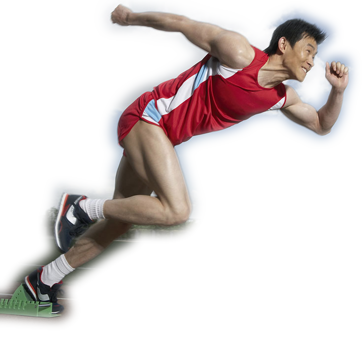
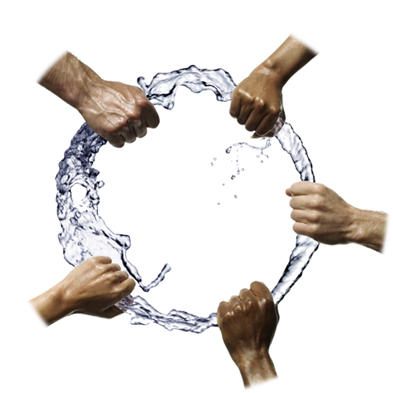

水·活力
水是动植物身体中最重要的无机物，含量超过了50%。没有水，就没有生命，也就没有任何的生物迹象，也就丧失了生命的活力。
人们认为，人没有食物可以活一个星期，没有水只可以活三天。
活力·生命
生命在于永不止步。只有充沛的活力，才能保证生命的轨迹不会戛然中止。
水·活力·团结
水的活力，注入人的将是一团正能量，当所有的正能量汇聚在一起的时候，将后创造出团结的力量。
这力量是铁，这力量是钢，指引着人们在探索的道路上不断的前行。
只有流动的水能够给予你这样一种活力充沛的感觉。
